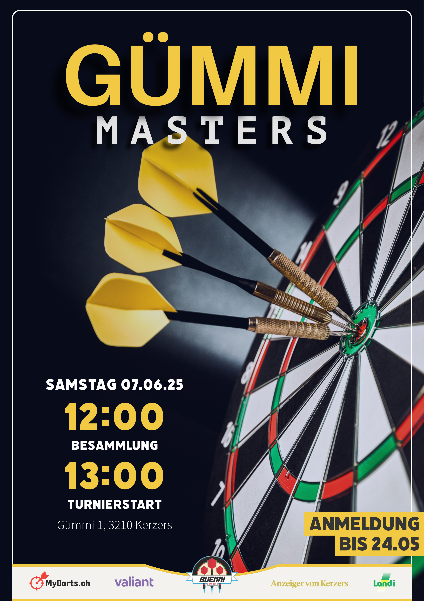

Leiter Produktionsinformatik
Verantwortung & Begleitung digitaler Transformationen wie M365-Integration, Koordination externer IT-Partner und Erstellung von Projekt- und Kostenreports für die Geschäftsleitung.
Michael Wasserfallen
Als Leiter Produktionsinformatik bei den Digitalen Medien der Armee DMA bin ich verantwortlich für IT-Fachanwendungen und bilde die Schnittstelle zwischen internen und externen Leistungserbringern. Um meine Praxiserfahrung mit zusätzlichem Wissen anzureichern absolviere ich den Bachelorstudiengang Digital Business & AI an der Berner Fachhochschule.
Verantwortung & Begleitung digitaler Transformationen wie M365-Integration, Koordination externer IT-Partner und Erstellung von Projekt- und Kostenreports für die Geschäftsleitung.
Leitung grösserer Projekte wie der Migration der IT-Arbeitssysteme (2022). Weiterbildung in 3D-Design, Animation sowie Integration in VR-/AR-Umgebungen.
Übernahme des First-Level-Supports nach Abschluss der Ausbildung zum Mediamatiker bis zum Start der Rekrutenschule.
Konzeption und Aufbau einer webbasierten Lösung, um Resultate eines Dartturniers live zu erfassen und auf einem Screen im Lokal anzuzeigen – inklusive automatisch berechneter Auswertung.
Jetzt ansehen!
Lass uns austauschen – mehr über mich, meine Kompetenzen und Projekte findest du hier.